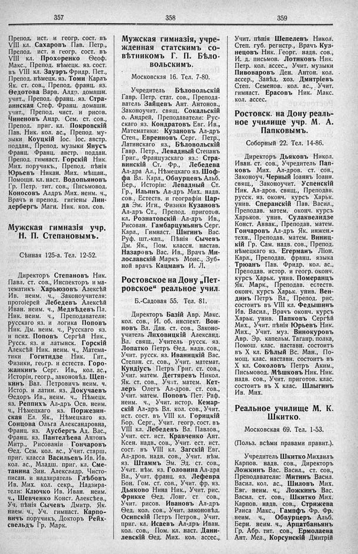

Лист источника 251
Скан

Распознанный текст
357
Препод. ист. и геогр. сост. въ
VIII кл. Сахаровъ Пав. Петр.,
Препод. ист. и геогр. сост. въ
VIII кл. Прохоренко Ѳеоф.
Макс., Препод. нѣмецк. яз. сост.
въ VIII кл. Зауэръ Фридр. Пет.,
Препод. нѣмецк. яз. Томи Карлъ
Як. ст. сов., Препод. франц. яз.
Ѳедотова Варв. Алдр. домашн.
учит., Препод. франц. яз. Стра-
винская Стеф. Франц. домашн.
учит., Препод. чист. и рисов.
Чиненовъ Андр. Сем. ст. сов.,
Препод. приг. кл. Покровскій
Пав. Ник. кол. ас., Препод. му-
зыки Коуцкій Іос. Іос. австр.
поддан., Препод. музыки Янусъ
Франц. Франц. австр. поддан.
Препод. гимнаст. Горскій Ник.
Мих. поручикъ., Препод. пѣнія
Юрьевъ Никан. Мих. мѣщан.,
Помощн. кл. наст. Водопьяновъ
Гр. Петр. тит. сов., Письмовод.
Коносовъ Алдръ Мих. неим. ч.,
Врачъ и препод. гигіены Лин-
дербергъ Магн. Ник. кол. сов.
Мужская гимназія учр.
Н. П. Степановымъ.
Сѣнная 125-а. Тел. 12-52.
Директоръ Степановъ Ник.
Павл. ст. сов., Инспекторъ и ма-
тематикъ Харьюзовъ Алексѣй
Ив. неим. ч., Законоучителя:
протоіерей Лебедевъ Алексѣй
Иван. неим. ч., Медвѣдевъ Пл.
Ник. неим. ч., Преподаватели:
русскаго яз. и логика Поповъ
Ник. Дм. неим. ч., Русскаго яз.
и псих. Поповъ Сергѣй Ник.,
Русск. яз. и латынск. Горскій
Алексѣй Ник. неим. ч., Матема-
тики Гогитидзе Ник. Гит.,
Физики, геогр. и естеств. Горо-
жанкинъ Серг. Ив., кол. ас.,
Исторіи, геогр., законовѣд. Щеп-
кинъ Вал. Петровичъ неим. ч.
Истор. и латин. яз. Докучаевъ
Ѳедоръ Ив., неим. ч., Нѣмецк.
яз. Реппихъ Ал-дръ Осв. неим.
ч., Нѣмецкаго яз. Поржезин-
ская Ел. Як., Нѣмецкаго яз.
Сонцова Ольга Александровна,
Франц. яз. Аусбергъ Ад. Вас.,
Франц. яз. Пантелѣева Антонъ
Митр., Рисованіи Гончаровъ
Ѳед. Сем. кол. ас., Учит. старш.
приг. класса Васильевъ Ив. Ив.
кол. ас., Младш. приг. кл. Сме-
танина Зин. Александр. Чисто-
писан. и надзиратель Глѣбовъ
Ив. Мих. кол. секр., Надзира-
тели: Ключко Ив. Иван. неим.
ч., Шевченко Конст. Алексѣев.,
Уч. пѣнія Сычевъ Дмитр. Як.
нием. ч., Уч. гимнаст. Карпо-
вичъ поручикъ, Докторъ Рейх-
свельдъ Гр. Марк.
358
Мужская гимназія, учре-
жденная статскимъ со-
вѣтникомъ Г. П. Бѣло-
вольскимъ.
Московская 16. Тел. 7-80.
Учредитель Бѣловольскій
Гавр. Петр. стат. сов., Препода-
ватель Зайцевъ Ант. Антонов.,
Законоучит. свящ. Сокальскій
о. Андрей, Преподаватели: Рус-
скаго яз. Кондратовъ Евг. Ив.,
Математики: Кузановъ Ал-дръ
Степ., Евреиновъ Серг. Петр.,
Латинскаго яз., Бѣловольскій
Гавр. Петр., Левадный Степанъ
Григ., Французскаго яз.: Стра-
винскій Ст. Фр., Лебедева
Ал-дра Ал., Нѣмецкаго яз. Шоф-
фа Вл. Карл., Обвурцевъ Альб.
Бер., Исторіи: Левадный Ст.
Гр., Ильинъ Ал-дръ Мих. надв.
сов., Естеств. и географіи Цар-
да Эм. Игн., Физики Кузановъ
Ал-дръ Ст., Препод. приготов.
кл. Рознатовскій Ал-дръ Ив.,
Рисован. Гамбарцумьянъ Серг.
Карл., Гимнаст. Шигинъ Вас.
Руф. шт.-кап., Пѣнія Сычевъ
Дм. Як., Пом. классн. настав.
Назаровъ Вас. Ив., Врачъ Ми-
лославскій Маркъ Моис., Зуб-
ной врачъ Кацманъ И. Л.
Ростовское на Дону „Пет-
ровское“ реальное учил.
Б.-Садовая 55. Тел. 81.
Директоръ Базій Авр. Макс.
кол. сов., И. об. инспект. Вои-
новъ Вл. Дан. ст. сов., Законо-
учитель Лиховицкій Александ.
Вл. свящ., Учитель русск. яз.
Лопатко Петръ Ѳед. надв. сов.,
Учит. русск. яз. Иваницкій Вас.
Степан. ст. сов., Учит. математ.
Кундіусъ Петръ Григ. ст. сов.,
Учит. матем. Дегтяревъ Никол.
Як. ст. сов., Учит. матем. Кет-
леръ Олегъ Ал-дров. ст. сов.,
Учит. матем. Поповъ Пет. Раф.
неим. ч., Учит. истор. Кемар-
скій Ал-дръ Вл. кол. сов., Учит.
ист. сост. въ VIII кл. Горицкій
Бор. Серг., Учит. геогр. сост. въ
VIII кл. Лебедевъ Вл. Павлов.,
Учит. ест. ист. Кравченко Ант.
Ксен. надв. сов., Учит. ест. ист.
сост. въ VIII кл. Загскій Евг.
Ал-дров. надв. сов., Учит. нѣм.
яз. Штаммъ Эм. Эд. ст. сов.,
Учит. нѣм. яз. Головина Ал-дра
Вл., Учит. франц. яз. Лефевра
Бон. Гом. ст. сов., Учит. фр. яз.
Дьяково Нина Ник., Учит. рис.
Фрикке Ѳед. Лонг. ст. сов.,
Учит. рисов. Ивановъ Ал-дръ
Ѳед. кол. сов., Учит. законовѣд.
Осипскій Петръ Петров., Учит.
приг. кл. Исаевъ Ал-дръ Иван.
кол. сов., Пом. кл. наст. Дани-
левскій Ѳед. Мих. кол. ассес.,
359
Учит. пѣнія Шепелевъ Никол.
Степ. губ. регистр., Врачъ Куз-
нецовъ Ник. Георг. надв. сов.,
И. д. письмов. Лотиковъ Ник.
Петр. кол. ассес., Учит. музыки
Пивоваровъ Ден. Антон. кол.
ассер., Завѣд. хоз. Дмитріевъ
Степ. Семенов. кол. ас., Учит.
гимнаст. Ерасовъ Ник. Макс.
кол. ассес.
Ростовск. на Дону реаль-
ное училище учр. М. А.
Папковымъ.
Соборный 22. Тел. 14-86.
Директоръ Дьяковъ Никол.
Иван. ст. сов., Учредитель Пап-
ковъ Мих. Ал-дров. ст. сов.,
Законоуч. Черный Іоаннъ Іоанн.
свящ., Законоучит. Успенскій
Ник. Ал-дров. свящ., Преподав.
русск. яз. оконч. курсъ Харьк.
унив. Сперанскій Пав. Васил.,
Преподав. матем. оконч. курсъ
Харьков. унив. Сулаквелидзе
Конст. Аввак., Преподав. матем.
Гончаровъ Ал-дръ Як. инжен.-
техн., Преподав. матем. Виниц-
кій Гр. Сам. надв. сов., Препод.
нѣмецкаго яз. Егерманъ Ліон.
Карл., Преподав. франц. языка
Трюанъ Пав. Фридр. кол. ас.,
Преподав. истор. и геогр. оконч.
курсъ Харьк. унив. Померанцъ
Як. Марк., Преподав. естеств.
оконч. курсъ Харьк. унив. Вен-
динъ Петръ Вл., Препод. рис.
состоитъ въ VIII кл. Федышинъ
Ив. Васил., Врачъ оконч. курсъ
Харьк. унив. Папковъ Сергѣй
Мих., Учит. пѣнія Юрьевъ Ник.
Мих., Учит. муз. Винокуровъ
Авр. Эр. капельм. Таганр. полка,
Помощ. клас. наставн. состоитъ
въ Х кл. Бѣлый Вс. Ман., По-
мощ. клас. наставн. состоитъ въ
Х кл. Соколовъ Петръ Аким.,
Письмовод. Мѣшковъ Ник. Ник.
надв. сов., Учит. приготов. клас.
состоитъ въ Х клас. Шлыгинъ
Ив. Мих.
Реальное училище М. К.
Шкитко.
Московская 69. Тел. 1-53.
(Польз. всѣми правами правит.).
Учредитель Шкитко Михаилъ
Карпов. надв. сов., Директоръ
Ложкинъ Вас. Васил., ст. сов.,
Преподаватели: Митинъ Васил.
Васил. кол. ас., Шиловъ Мих.
Евг. неим. ч., Ложкинъ Вас.
Васил. ст. сов., Шкитко Мих.
Карпов. надв. сов., Стрижева
Раиса Макс., Гампфъ Фр. Фр.
неим. ч., Обвурцевъ Альб.
Берн. неим. ч., Арцатбаньянъ
Гр. Абр. тит. сов., Ермолаева
Ант. Мел., Корсунскій Дмитрій